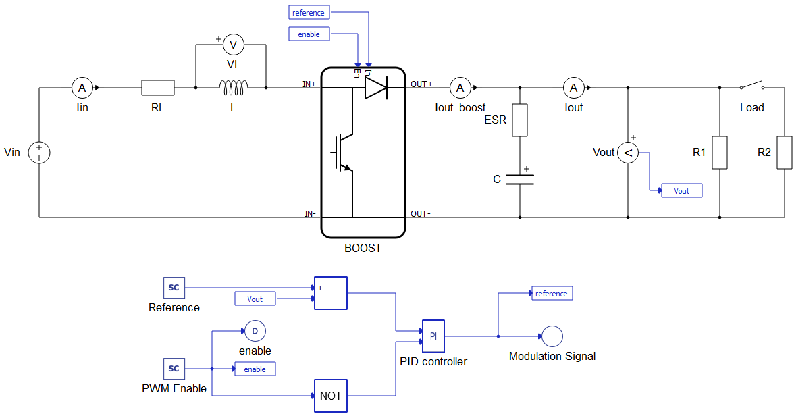
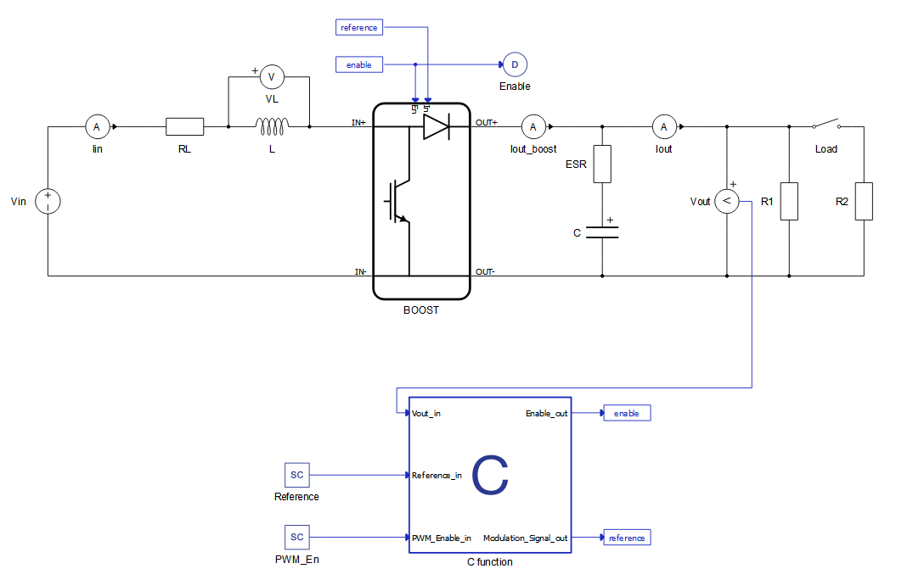
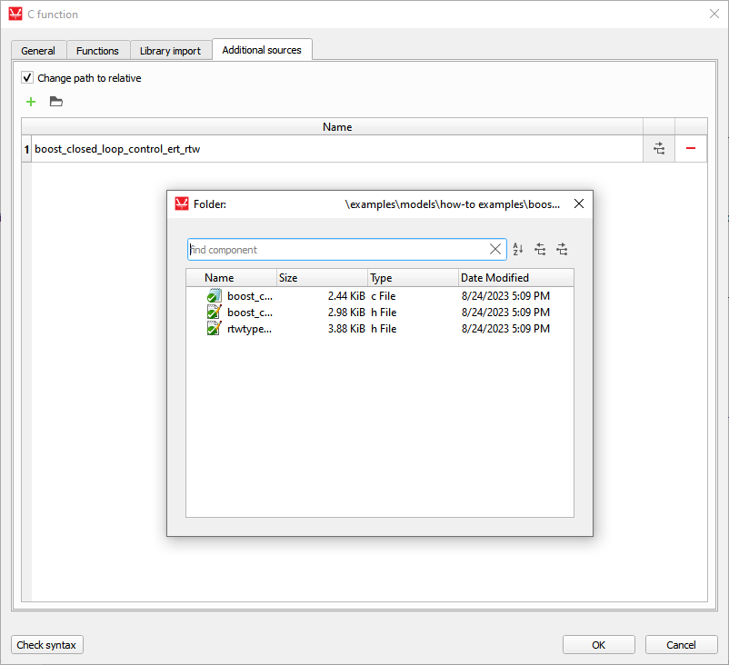
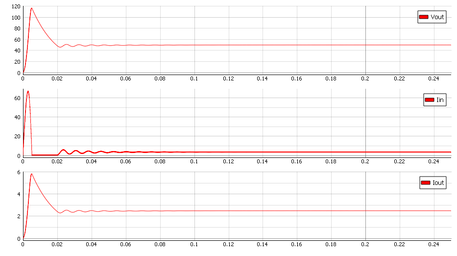

Software-in-the-loop approach in rapid control prototyping
Demonstration of two RCP implementations of a PI Controller using Schematic Editor libraries and C code import from Simulink
Introduction
The Software-in-the-loop (SIL) concept enables the initial simulation and validation of virtual controllers. It proves the concept of the controller under development without the cost and complexity associated with testing real controllers. Rapid Control Prototyping (RCP) is a process that lets engineers quickly test and iterate their control strategies. RCP decreases development time by allowing corrections to be made early in the product process. By giving engineering a look at the product early in the design process, mistakes can be corrected and changes can be made while they are still inexpensive.
By using an RCP approach, it is possible to test and evaluate the behavior of new equipment in the early phase of the project. This example shows how SIL can enable RCP by testing and validating control of a Boost Converter.
Model description
The electrical model of the boost converter consists of a voltage source, an inductor with internal resistance, a capacitor with internal resistance, two types of loads, and a switch. Initial input voltage is 30 V and output voltage is 50 V. The carrier frequency of the PWM modulator is 10 kHz. The controller is implemented in two different ways: first by using Signal Processing Components as shown in Figure 1, and second by using C function as shown in Figure 2.


After generating C code files from Simulink, the location of the directory should be included in the “Additional Sources” tab. The imported directory can be confirmed in the “Name” tab.

To include “Controller” functions in Schematic Editor, we use a simple output_fcn function. In output_fcn() below, you can see how to call this function.
output_fnc(){
rtU.Vout = Vout_in;
rtU.Reference = Reference_in;
rtU.PWM_Enable = PWM_Enable_in;
boost_closed_loop_control_step();
Enable_out = rtY.enable;
Modulation_Signal_out = rtY.Modulation_Signal;
}The PI regulator is implemented by a void function “boost_closed_loop_control_step”. Inputs for this function are reference voltage, which comes from the SCADA Input component (Reference_in), and output voltage (Vout_in). This function outputs the settings for the duty cycle for the PWM modulator.
Simulation
In this application note we can see the behavior of the PI controller. Also, we can compare the controller from Simulink and the controller implemented using Signal Processing components. Figure 4 and Figure 5 show how the controller reacts during a simple transition to the "On" state. We can see that there is no difference between these two approaches. Output power in both scenarios is 120 W.


Test Automation
We don’t have a test automation for this example yet. Let us know if you wish to contribute and we will gladly have you signed on the application note!
Example requirements
Table 1 provides detailed information about the file locations and hardware requirements for running the model in real-time, followed by the HIL device resource utilization when running the model using this minimal hardware configuration. This information is provided to help you with running and customizing the model as you see fit.
| Files | |
|---|---|
| Typhoon HIL files | examples\models\general power electronics\boost closed loop* boost closed loop.tse boost closed loop.cus *Signal processing example only |
| Minimum hardware requirements | |
| No. of HIL devices | 1 |
| HIL device model | HIL402 |
| Device configuration | 1 |
| HIL device resource utilization | |
| No. of processing cores | 1 |
| Max. matrix memory utilization | 1.93% |
| Max. time slot utilization | 62.5% |
| Simulation step, electrical | 0.5 µs |
| Execution rate, signal processing | 100 µs |
Authors
[1] Simisa Simic